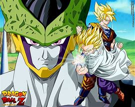

Saga de Cell

En este apartado te resumiremos la saga de Cell de Dragon Ball Z
La Saga de Cell es una de las más importantes y emocionantes de Dragon Ball Z. Aunque se conecta directamente con la Saga de los Androides, se considera un arco propio por la introducción del villano principal: Cell, una bioandroide creada por el Dr. Gero
Contexto
La historia comienza cuando Cell, una creación del Dr. Gero, aparece en la Tierra. Cell es una bioandroide que proviene del futuro y ha sido programado para absorber a los androides #17 y #18 para alcanzar su "forma perfecta". Su misión es demostrar su supremacía destruyendo a todos los seres que se interpongan en su camino. Tras la llegada de los androides #17 y #18, los Guerreros Z ya estaban lidiando con una amenaza considerable, pero la aparición de Cell eleva el peligro a un nuevo nivel, ya que se revela que Cell es capaz de absorber energía y aumentar exponencialmente su poder.
Cell comienza su recorrido absorbiendo a los humanos para incrementar su poder mientras busca a los androides. Inicialmente, Cell se encuentra en su primera forma, en la que es mucho más débil que en su estado final. Durante este tiempo, Piccolo, quien se ha fusionado con Kami para aumentar su poder, intenta detener a Cell, pero no puede impedir que siga aumentando su fuerza
Mientras Cell sigue absorbiendo la energía de humanos indefensos, eventualmente encuentra a #17. Tras una intensa batalla con Piccolo, Cell absorbe a #17, lo que le permite evolucionar a su segunda forma, una versión más poderosa y más amenazante. En este estado, Cell comienza a dominar a todos los guerreros que intentan detenerlo. Al mismo tiempo, Vegeta y Trunks han estado entrenando en la Sala del Espíritu y el Tiempo (una cámara que permite entrenar un año en un solo día) para obtener nuevas habilidades y aumentar su poder. Vegeta, confiado en su nueva fuerza, llega al campo de batalla y enfrenta a la segunda forma de Cell.
Durante la batalla, Vegeta, impulsado por su orgullo Saiyajin, deja que Cell absorba a #18 para que pueda alcanzar su forma perfecta, con el fin de tener una pelea digna de su nuevo poder. Cell, al absorber a #18, se transforma en su forma perfecta, en la que se vuelve increíblemente poderoso, mucho más allá de cualquier otro personaje en ese momento. Incluso con su transformación, Vegeta es completamente superado por Cell en esta nueva forma, a pesar de todo el poder que ha adquirido en la Sala del Espíritu y el Tiempo. Trunks intenta intervenir, alcanzando un nivel de Super Saiyajin ultra poderoso, pero su fuerza bruta no es suficiente para vencer la velocidad y la agilidad de Cell.
Tras alcanzar su forma perfecta, Cell decide organizar un torneo de artes marciales conocido como los Cell Games, para probar su fuerza contra los guerreros más poderosos de la Tierra. Invita a los Guerreros Z a participar, advirtiendo que si no logran derrotarlo, destruirá el planeta. Durante este tiempo, Goku y Gohan entrenan en la Sala del Espíritu y el Tiempo para prepararse para el torneo. Goku cree que Gohan tiene un poder oculto que podría superar al de cualquier otro guerrero, pero Gohan no está seguro de ser lo suficientemente fuerte como para derrotar a Cell.